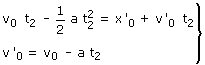

Meditación previa
A primera vista parece que la condición para que no haya choque es que la velocidad del tren de viajeros, en el momento del alcance, sea cero... ¡Pues no!, basta con que, en el momento del alcance, el tren de pasajeros tenga la misma velocidad que el tren de mercancias
Aplicación:
En el instante del encuentro, t2, la posición de los trenes será la misma: x2 = x'2 y además la velocidad del tren de viajeros tendrá que ser igual a la del mercancias: v2 = v'0
